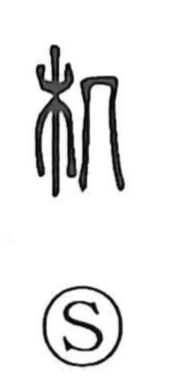

机

Uncategorized
Kun: tsukue | On: ki
desk ・ table
Explanation
Shirakawa explains 机 as a phono-semantic character: 几 serves as the phonetic, indicating the on reading ki, while the original form depicts a small stand with legs at both ends—first a stool or chair, and by extension an armrest. This same support is seen in 凭, ‘to lean on,’ where the body rests against an armrest. From such a portable stand the meaning broadened to a desk for reading and writing. Hence expressions like 机案, literally ‘desk and consideration,’ with 案 naming both a desk and the act of thinking, and the epistolary honorific 机下, ‘at your desk,’ used beside an addressee’s name.